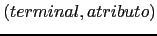

GAP.pm que provea una subrutina gap para
la generación automática de un APDR supuesto que la gramática de entrada es
LL(1).
La subrutina gap recibe como entrada la gramática según la estructura de
datos generada por la función Grammar::Parse de la versión 0.3 del módulo
Grammar.
La estructura de datos generada por la función Grammar::Parse
se explicó en la práctica
4.6.8.
La estructura ha sido extendida
en esta versión para incluir el código que se sitúe en la zona de cola.
Por ejemplo, dada la gramática de entrada:
Grammar/03/scripts$ cat -n aSb.yp
1 %%
2 S:
3 | 'a' S 'b'
4 ;
5 %%
6
7 sub Lex {
8 local $_ = shift; # input
9 my @tokens;
10
11
12 while ($_) {
13 s/^\s*//; # fuera blancos
14 push @tokens, $1, $1 if s/^(.)//s
15 }
16 @tokens;
17 }
18
19 sub main {
20 my $filename = shift;
21 my $input;
22
23 if (defined($filename)) {
24 local $/ = undef;
25 open my $FILE, $filename or die "No se pudo abrir $filename\n";
26 $input = <$FILE>;
27 close($FILE);
28 }
29 else { $input = <STDIN> }
30
31 my @tokens = Lex($input);
32 Parse(@tokens); # Llamada al analizador generado
33 print "Sintácticamente correcto\n";
34 }
se genera la siguiente estructura de datos:
{
'SYMS' => { 'S' => 2, 'b' => 3, 'a' => 3 }, # Símbolo => línea de aparición
'NULL' => { 'S' => 1 }, # Símbolos que se anulan
'RULES' => [ # Reglas
[ 'S', [] ], # S produce vacío
[ 'S', [ 'a', 'S', 'b' ] ] # S-> a S b
],
'START' => 'S', # Símbolo de arranque
'TERM' => [ 'b', 'a' ], # Terminales
'NTERM' => { 'S' => [ 0, 1 ] } # Variables sintácticas e índices de las reglas de esa variable
'TAIL' => [ # [ 'Código de cola', línea en la que está el segundo %% ]
'
sub Lex {
local $_ = shift; # input
my @tokens;
while ($_) {
s/^\\s*//; # fuera blancos
push @tokens, $1, $1 if s/^(.)//s
}
@tokens;
}
sub main {
my $filename = shift;
my $input;
if (defined($filename)) {
local $/ = undef;
open my $FILE, $filename or die "No se pudo abrir $filename\\n";
$input = <$FILE>;
close($FILE);
}
else { $input = <STDIN> }
my @tokens = Lex($input);
my $ok = Parse(@tokens); # Llamada al analizador generado
print "Sintácticamente correcto\\n" if $ok;
}
', 5 ], # línea en la que está el segundo %%
};
Asi pues la entrada con clave TAIL contiene el código auxiliar de
cola. Este código debe ser incluido por su programa dentro del texto del
paquete generado por gap.
La función gap también recibe como entrada el nombre
del package:
$package_text = &gap($grammar, 'Package_name');La función
gap retorna
una cadena conteniendo el package en el que estan las subrutinas del
analizador sintáctico.
La idea es que dicha cadena se salvará en un fichero
con nombre Package_name.pm que podrá posteriormente ser usado
(use Package_name) por un programa que necesite analizar entradas
que se conforman de acuerdo a la especificación de la gramática.
parser (esto es, su nombre completo es: Package_name::parser.
Evidentemente Package_name debe ser un nombre Perl válido).
Ninguna subrutina deberá ser exportada sino que deberán ser llamadas
por su nombre completo.
La subrutina parser recibe como argumento el array de
terminales, obtiene el primer terminal y llama a la subrutina
asociada con el símbolo de arranque. Los terminales están representados
como parejas

.
Observe que, una vez que la cadena $package_text conteniendo el paquete ha sido
generada y salvada en un fichero con nombre Package_name.pm, podemos escribir
un programa cliente:
use strict; use Package_name; &Package_name::main;
Este programa espera una entrada desde fichero o STDIN e
informa si dicha entrada es sintácticamente correcta o no
para la gramática en cuestión.
Para facilitar la escritura de GAP.pm pueden hacer uso
del módulo PL::FirstFollow
el cual calcula los  y los
y los  . El módulo PL::FirstFollow
depende de
Set::Scalar
escrito por
Jarkko Hietaniemi: instálelo primero.
. El módulo PL::FirstFollow
depende de
Set::Scalar
escrito por
Jarkko Hietaniemi: instálelo primero.
Deberá familiarizarse con PL::FirstFollow, rellenar la
documentación de todas las subrutinas (apariciones de ???? en el texto)
y escribir la documentación siguiendo el template que se provee.
Rellene los fragmentos de código que se han sustituido por
signos de interrogación.
Haga un estudio de cubrimiento
y añada pruebas para mejorar el actual. El actual cubrimiento es:
---------------------------- ------ ------ ------ ------ ------ ------ ------ File stmt bran cond sub pod time total ---------------------------- ------ ------ ------ ------ ------ ------ ------ ...ammar-0.03/lib/Grammar.pm 100.0 n/a n/a 100.0 0.0 75.3 97.2 blib/lib/PL/FirstFollow.pm 100.0 92.9 50.0 100.0 0.0 24.7 95.1 Total 100.0 92.9 50.0 100.0 0.0 100.0 95.5 ---------------------------- ------ ------ ------ ------ ------ ------ ------Si observa un fallo en PL::FirstFollow háganoslo saber y además de resolverlo escriba una prueba para detectar el fallo.
Haga un estudio de profiling de su aplicación.
Un módulo que puede facilitar la escritura de esta práctica es Text::Template debido a Mark Jason Dominus. El siguiente ejemplo de uso es un fragmento de un traductor - que nunca acabo de terminar - que toma con fuente un fichero en el formato que usa Moodle para los cuestionarios (conocido como formato GIFT) y lo convierte en un cuestionario LATEX:
lhp@nereida:~/projects/Gift2LaTeX/Gift2LaTeX/lib$ cat -n Gift2LaTeX.pm
1 package Gift2LaTeX;
2
3 use strict;
4 use warnings;
5 use Gift;
6 use Text::Template;
7 use HTML::Latex;
.. ......................................................
49 package Gift::TRUEFALSE; # True-false questions belong to this class
50
51 { # closure
52
53 die "Can't find $TEMPLATE_DIR/TRUEFALSE_question.tep\n"
54 unless -e "$TEMPLATE_DIR/TRUEFALSE_question.tep";
55 my $tfq_tmpl = Text::Template->new( #tfq = true-false question
56 DELIMITERS => ['%<', '%>'];
57 SOURCE => "$TEMPLATE_DIR/TRUEFALSE_question.tep",
58 );
.. ......................................................
67 sub gen_latex {
68 my $self = shift;
69
70 ########## Generate latex for question
71 my $prefix = $self->PREFIX;
72
73 my $sufix = $self->POSTSTATE;
74
75 $self->Error("Only HTML and PLAIN formats are supported\n")
76 unless (!$self->FORMAT or ($self->FORMAT =~ m{html|plain}i));
77
78 my ($prefix_tex, $sufix_tex);
79 if (defined($self->FORMAT) and $self->FORMAT =~ m{plain}i) {
80 $prefix_tex = $prefix;
81 $sufix_tex = $sufix;
82 }
83 else { # HTML by default
.. ......................................................
86 }
87 my $params = {
88 prefix => $prefix_tex,
89 sufix => $sufix_tex,
90 separator => $separator,
91 label => $label_prefix.$question_number,
92 question_number => $question_number
93 };
94 my $question_tex = $tfq_tmpl->fill_in(HASH => $params);
96 ########## Generate latex for answer
... ....................................
101 }
102 }
En la línea 55 se crea el template. El template se lee desde el fichero
"$TEMPLATE_DIR/TRUEFALSE_question.tep" cuyo contenido es una mezcla
de texto (en este caso texto LATEX y HTML) con código Perl:
El código Perl aparece acotado entre los delimitadores '%<'
y '%>'.
lhp@nereida:~/projects/Gift2LaTeX/Gift2LaTeX/etc/en$ cat -n TRUEFALSE_question.tep
1 \ begin{latexonly}
2 %<$separator%>
3 \ label{question:%<$label%>}
4 %<$prefix%>
5
6 \ begin{center}
7 \ begin{tabular}{llll}
8 $\ bigcirc$ & TRUE & $\ bigcirc$ & FALSE
9 \ end{tabular}
10
11 \noindent %<$sufix%>
12 \ end{center}
13 \ end{latexonly}
14
15 \ begin{htmlonly}
16 %<$separator%>
17 \ label{question:%<$label%>}
18 %<$prefix%>
19
20 \ begin{center}
21 \ begin{tabular}{llll}
22 \ htmlref{$\bigcirc$}{answer:%<$label%>} & TRUE &
23 \ htmlref{$\bigcirc$}{answer:%<$label%>} & FALSE
24 \ end{tabular}
25
26 \ noindent %<$sufix%>
27 \ end{center}
28 \ end{htmlonly}
El template se rellena en las líneas 87-94. En esa llamada se ejecuta el código Perl incrustado en el esqueleto y su resultado se inserta en la posición que ocupa en el texto.
my $usage = "Usage: $0 <file> [-full] [-o] [-beans]\n"
. "Options:\n"
. " -full : produce a full dump\n"
. " -o : dump in octal\n"
. " -beans : source is Java\n"
;
ponga el punto al principio de la siguiente línea, no al final.
Pero cuando el número de líneas es grande es mejor usar un here document o documento aqui. Veamos un ejemplo:
print <<"EOI"; El programa se deberá ejecutar con: $0 numfiles $opciones initialvalue EOIPara definir un ``documento aqui'' se escribe la etiqueta entrecomillada y precedida de
<< y
sigue el texto que consituye el here document
que se delimita por una línea en blanco que empieza por la etiqueta.
Al documento aquí se le trata como una cadena de doble comilla si
la etiqueta aparece en doble comilla y como de comilla simple
si la etiqueta esta entre comillas simples.
Observe que el punto y coma se escribe despues
de la primera aparición
de la etiqueta.
Un problema con el uso de los heredoc es que rompen la estructura normal del sangrado:
if ($usage_error) {
warn <<'END_USAGE';
Usage: qdump <file> [-full] [-o] [-beans]
Options:
-full : produce a full dump
-o : dump in octal
-beans : source is Java
END_USAGE
}
Es mejor que cada heredoc se aisle en una subrutina y se parametrice con
las variables que van a ser interpoladas:
sub build_usage {
my ($prog_name, $file_name) = @_;
return <<"END_USAGE";
Usage: $prog_name $file_name [-full] [-o] [-beans]
Options:
-full : produce a full dump
-o : dump in octal
-beans : source is Java
END_USAGE
}
que mas tarde puede ser llamado con los valores de interpolación adecuados:
if ($usage_error) {
warn build_usage($PROGRAM_NAME, $requested_file);
}
Véase el libro de Conway Perl Best Practices
[7]
para mas detalles sobre buenas prácticas de programación con heredocs.